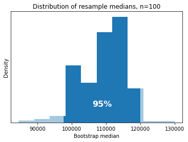
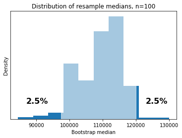

Confidence Intervals¶
As a way to embrace uncertainty, we’ve come to the decision that the best way to make an estimate of a population parameter is to give our point estimate, then quickly follow it up with a range of possible estimates we might have given if our sample had looked different. We used bootstrapping to come up with the distribution of possible estimates, but then we just eyeballed the range.
What is that range, what does it really mean and how do we leverage it mathematically? And, gee, what is this ‘confidence’ we keep hearing about?
Percentiles¶
A numerical way to look at a distribution and find the ‘most common’ range of values is to compute percentiles. Formally, the \(x\)th percentile is defined as “the value in the data at which \(x\%\) of the data is below (or equal to) that value. Some well known percentiles are:
The 0th percentile is the minimum – no data is below this value
The 50th percentile is generally the median – half of the data is below the median, and half is above
The only difference is that during the median you might average the two center values, whereas with the 50th percentile you would just choose the higher value
The 100th percentile is the maximum – all data is below this value
The 25th and 75th percentiles are also called the first and third ‘quartiles’ – coupled coupled with the median (second quartile) these essentially split our data into four bins containing equal amounts of data
As you can start to imagine, we can use percentiles to determine a range of ‘typical’ values in a distribution – maybe something like computing a range of values where less than \(a\%\) of data are below the range and less than \(b\%\) of data are above the range.
First we should dig a bit further into what percentiles are.
Calculating percentiles by hand¶
The easiest way to understand percentiles is to calculate a couple yourself. Just like with the median, to find any percentile we start by taking some array and sorting it.
import numpy as np
# Eight random numbers are in here
arr = np.array([7, 2, 9, 2, 1, 6, 3, 4])
arr
array([7, 2, 9, 2, 1, 6, 3, 4])
arr_sorted = np.sort(arr)
arr_sorted
array([1, 2, 2, 3, 4, 6, 7, 9])
In this sorted form, it becomes trivial to see at which value is the \(x\%\) largest – all we need to do is count \(x\%\) of the way through our array then stop.
To turn our percentile into a position in our array, we take \(x\%\) of the length of our array, \(n\). In math that means consider the \(x\)th percentile to be the element in the \((x / 100)\times n\)th position of our sorted array.
For the example above we have \(8\) elements, so to find the 50th percentile we’d look for the \(8\times 0.5 = 4\)th element in our sorted list. That’s easy enough, we get that the 50th percentile is 3.
More information about percentiles¶
There are a couple quirks to percentiles that we should watch out for.
Only having \(8\) elements means that we can’t find a perfect percentile for just any old \(x\%\) we look at. If we wanted the 40th percentile we’d try to look for the \(8\times 0.4 = 3.2\)th element in our sorted list… which isn’t quite possible. In this setting we always round up to the next integer position when calculating percentiles by hand – so we’d look for the \(4\)th element in our sorted list and end up with the 40th percentile also equaling 3.
Finally, notice that we have some duplicate values in our array – namely there are two 2’s. The percentile is only concerned about the amount of data that lies below or equal to it, not the value itself, therefore a duplicated value like 2 could theoretically satisfy multiple percentiles. Taking this to the extreme, could you imagine if our array was entirely full of the value 2? Then every percentile would equal 2!
In practice, we’re usually calculating percentiles on arrays that aren’t so tiny, and we should always explore our data to see if possible problems will arise, so these quirks aren’t too impactful in your daily life – but they are worth remembering if you ever find yourself faced with strange percentiles!
Calculating percentiles with NumPy¶
As with many great things in life, NumPy can calculate percentiles for us. However, as with many things NumPy creates, their method of dealing with certain quirks is a bit different than ours.
The main difference is that NumPy doesn’t constrain itself to return a point directly in our data, instead it will interpolate between values to find a new point at which \(x\%\) of the data lies below and \(100-x\%\) of the data lies above. To see what this means in practice, we can look at our example array again.
arr_sorted
array([1, 2, 2, 3, 4, 6, 7, 9])
The np.percentile function is used to calculate desired percentiles of an array. The first argument is the array of data, and the second is a percent we want to get the percentile for. Note that the percent we pass in should be between 0 and 100.
# Calculate a single percentile, where we pass in a percent between 0-100
np.percentile(arr, 50)
3.5
Before we calculated by hand that the 50th percentile was 3, but NumPy uses interpolation to decide that a slightly better percentile can be found by averaging the two values, 3 and 4, which equally split the data into two halves – this results in the median we’re so used to.
Once again, in practice our data should be sufficiently large that these differences in computation don’t truly make much of a difference in result.
A range of typical values¶
In our bootstrapping example, we generated a distribution of possible estimates we could have made if our sample distribution came out a bit differently. We then chose to predict not just the point estimate, but to also augment our estimate by looking at what values we would have commonly estimated if our sample looked different. We say something along the lines of “I wouldn’t be surprised if the true population parameter is somewhere in this range of typical values, since I recognize that my sample might look different each time!”
Finding a range of values where the true parameter may lie is called producing an interval estimate.
Using percentiles, we can formally and mathematically find that range of ‘typical’ point estimates by grabbing the range of the middle \(x\%\) of the data.

Another way we can think about this is by looking at the two percents on each side of our distribution of bootstrapped estimates. Each side only contains \(\frac{100-x}{2}\%\) of the data – in other words, these values were pretty uncommon!

And so, to find the range of the \(x\%\) most common values of a distribution, we can set the lower and upper percentiles.
Let’s calculate it! Remember our bootstrapped estimates of the median salary? I’ve saved it to a file we can load in so we can find the middle 95% range ourselves.
import babypandas as bpd
boot_medians = bpd.read_csv('../../data/bootstrapped_median_salary_estimates.csv')
boot_medians = boot_medians.get('Estimate')
Remember, to find the middle 95%, we’ll need to recognize that leaves \(100-95=5\%\) outside of the middle, and therefore \(2.5\%\) on each side – so we’ll calculate the lower end of our range as the 2.5th percentile and the upper end of our range as the 97.5th percentile.
lower = np.percentile(boot_medians, 2.5)
upper = np.percentile(boot_medians, 97.5)
print('The most typical 95% of our bootstrapped estimates land between', lower, 'and', upper)
The most typical 95% of our bootstrapped estimates land between 97500.0 and 120000.0
Confidence¶
So where does this talk of ‘confidence’ come in? When we create a distribution of bootstrapped estimates and find the middle \(x\%\) of typical values, the range of these typical values is called a \(x\%\) confidence interval. So, above we created a 95% confidence interval for the population median salary.
Why do we bring in ‘confidence’? It turns out that \(x\%\) of the time we take a random sample, bootstrap it, then calculate the \(x\%\) confidence interval, that range of values will successfully capture the true population parameter!
In other words, we can be \(x\%\) confident that the process which generated our interval produced an interval which includes the true parameter.
What!?
To illustrate what this means, let’s try it out.
Simulating confidence¶
As skeptical data scientists, let’s put that claim to the test by relying on some good ol’ simulation.
Our process which generates CI’s in this case is bootstrapping the median: we take a sample from the population, compute bootstrapped estimates for the median, then find the middle 95% of those estimates.
We can repeat this process a bunch of times, each time using a different sample. Then we’ll peek at how many of the generated intervals successfully capture the true median.
def bootstrap(sample, trials):
"""
Generates bootstrapped median estimates from a sample.
"""
# Remember, each resample should be the same size as the original sample
sample_size = sample.shape[0]
boot_medians = []
for i in range(trials):
# Remember to specify replacement!
resample = sample.sample(sample_size, replace=True)
# Calculate the median salary of each resample and add to our collection
boot_medians.append(resample.get('Salary').median())
return boot_medians
population = bpd.read_csv('../../data/salaries.csv', names=['Salary'])
pop_median = population.get('Salary').median()
interval_lowers = []
interval_uppers = []
# Do a bunch of times
for i in range(500):
# Create a brand new sample from the population
sample = population.sample(100)
# Create a bunch of bootstrapped statistics from this sample
boot_medians = bootstrap(sample, trials=100)
# Calculate the 95% confidence interval on the bootstrapped statistics
lower = np.percentile(boot_medians, 2.5)
upper = np.percentile(boot_medians, 97.5)
interval_lowers.append(lower)
interval_uppers.append(upper)
Now that we’ve created our intervals from the bootstrapped medians, what proportion of them were able to capture the population median?
# Remember, since we're doing element-wise logic we use the & operator
is_contained = (interval_lowers <= pop_median) & (pop_median <= interval_uppers)
# Our is_contained array is an array of True and False, we can find the
# proportion of True by taking the mean!
np.mean(is_contained)
We can also visualize all of our intervals by stacking them on top of each other on a number line, and see which ones cross the true population median or not.
# You're by no means not obligated to know how to produce this code, but it's
# great practice to try to understand what we're doing!
import matplotlib.pyplot as plt
plt.figure(figsize=(6, 6))
# Let's only draw 100 since 500 would be a *lot* in one graph :)
num_to_draw = 100
for i in range(num_to_draw):
lower = interval_lowers[i]
upper = interval_uppers[i]
# If the population median isn't in the interval we'll color it red
if lower <= pop_median <= upper:
color = 'skyblue'
else:
color = 'red'
# Each interval is drawn as a line from lower to upper, and its height is
# based on which trial number generated it.
plt.plot([lower, upper], [i, i], c=color)
# Draw the true population median
plt.axvline(pop_median, c='k', linestyle='dashed')
plt.title('True population median and 95% confidence intervals')
plt.xlabel('Median salary')
plt.ylabel('Trial number')
All of this goes to show that taking the middle 95% of bootstrapped medians is a process which we’re confident will produce a good interval roughly 95% of the time.
For more exploration, check out this interactive visualization of Confidence Intervals and Bootstrapping from Brown University.
Different levels of confidence¶
Because we can exhibit confidence in our bootstrapped median process (we just showed it experimentally), we can look at other levels of confidence besides just 95%.
A process which generates 80% confidence intervals may produce narrower intervals on average, which could be nice, but we’d only expect it to produce good intervals 80% of the time.
Say we wanted to use a process which generates 100% confidence intervals – we’d expect that 100% of the intervals produced would capture the true population parameter. Sounds great, right?
Not quite. As our confidence increases, so to on average does the width of our intervals. For example, one way of creating 100% confidence intervals is by just guessing that the parameter is within the range from \(-\infty\) to positive \(\infty\)… which isn’t all that useful of an estimation anymore.
We can totally use high confidence levels if we want to make sure our estimate has a better chance of being correct. Just don’t try to set your confidence level to 100%.
The bootstrapped interval isn’t magical¶
Not all metrics will produce useful intervals when bootstrapped.
For example, if we wanted to estimate the population maximum, using the sample max as our estimate and bootstrapping this could help us get a sense of how much a sample max may vary, but it absolutely cannot produce an interval whose upper bound is greater than the sample max! So if our original sample doesn’t contain the population max, then neither can our interval.
Creating intervals with bootstrapped metrics and percentiles works best if there’s reason to believe the true sampling distribution of that metric is roughly symmetrical and bell shaped.
Other procedures can exhibit confidence¶
There’s nothing inherent about an interval itself which makes it a confidence interval. Basically: if you read \((13.5, 21.8)\) there’s nothing you can say about that particular interval of numbers which makes it good or bad. Rather, it’s the process which generated the interval which we have confidence in.
It so happens that grabbing the middle \(x\%\) of bootstrapped medians is a process we are confident in, same with for the bootstrapped means, or variances, or many other metrics and estimators. But, trying to apply this to another metric which the bootstrap is not so great at, such as the maximum, will result in a process we are not confident in.
There are a multitude of different processes besides bootstrapping that can produce interval estimates – many of which are processes that we have confidence in! We’ll cover this in the chapter about the Normal Curve and the Central Limit Theorem.